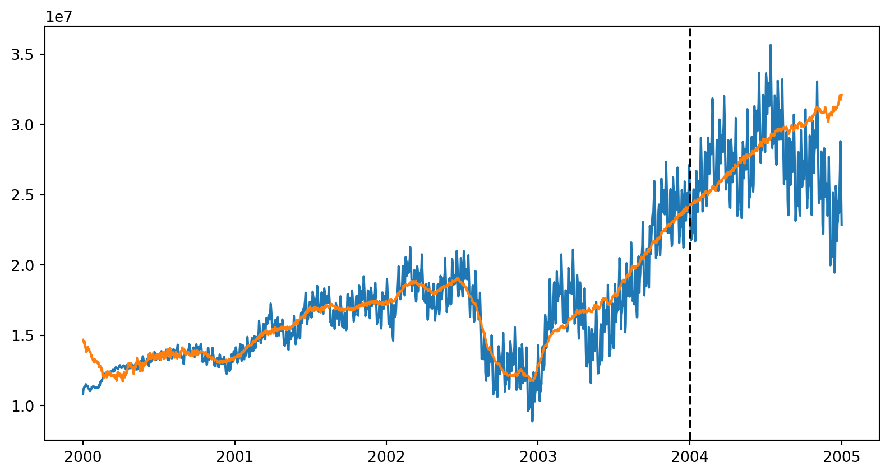

| revenue | |
|---|---|
| 2020-01-01 | 0.166728 |
| 2020-01-02 | 0.758168 |
| 2020-01-03 | 0.355295 |
| 2020-01-04 | 0.075880 |
| 2020-01-05 | 0.325597 |
Basics of Prophetverse API
Prophetverse is a powerful tool for building customized and glass-box forecasting and mix models. In Prophetverse, we define each component of the model as a separate effect, making this library extremely flexible to attend your specific needs.
In this page, we will:
- Understand the structure of
y(the target) andX(media & control variables) using the sktime interface.
- Understand the hyperparameters of Prophetverse
- Fit your first Bayesian MMM and generate forecasts.
1. Data Structures (y and X)
Prophetverse uses the sktime forecasting API. The essentials:
y: a pandas DataFrame indexed by a time index (pd.DatetimeIndexorpd.PeriodIndex). Single column for univariate MMM (e.g.revenue):
For panel datasets (e.g. in the case of multiple products or regions), use a MultiIndex, where the first index level is the entity (e.g. product or region) and the second level is the time.
| revenue | ||
|---|---|---|
| product | ||
| product_a | 2020-01-01 | 0.210703 |
| 2020-01-02 | 0.667614 | |
| 2020-01-03 | 0.974633 | |
| 2020-01-04 | 0.720064 | |
| 2020-01-05 | 0.327857 | |
| ... | ... | ... |
| product_c | 2020-12-27 | 0.299852 |
| 2020-12-28 | 0.658076 | |
| 2020-12-29 | 0.710156 | |
| 2020-12-30 | 0.620108 | |
| 2020-12-31 | 0.006610 |
1098 rows × 1 columns
X: a pandas DataFrame aligned on the same index containing exogenous variables (media spend, price, promotions, macro, etc.). Columns are arbitrary names.
The index type should always be the same for y and X, and every dataframe you use. After choosing Datetime or Period index for y, use the same type for X.
Example of dataset
Here we load a synthetic dataset:
from prophetverse.datasets._mmm.dataset1 import get_dataset
(y, X, *_) = get_dataset()
y.head()/opt/hostedtoolcache/Python/3.11.13/x64/lib/python3.11/site-packages/tqdm/auto.py:21: TqdmWarning: IProgress not found. Please update jupyter and ipywidgets. See https://ipywidgets.readthedocs.io/en/stable/user_install.html
from .autonotebook import tqdm as notebook_tqdm2000-01-01 10815512.0
2000-01-02 11120677.0
2000-01-03 11260387.0
2000-01-04 11322533.0
2000-01-05 11321180.0
Freq: D, dtype: float32The X looks like this:
X.head()| ad_spend_search | ad_spend_social_media | |
|---|---|---|
| 2000-01-01 | 89076.191178 | 98587.488958 |
| 2000-01-02 | 88891.993106 | 99066.321168 |
| 2000-01-03 | 89784.955064 | 97334.106903 |
| 2000-01-04 | 89931.220681 | 101747.300585 |
| 2000-01-05 | 89184.319596 | 93825.221809 |
We will split the dataset into training and testing sets.
from sktime.split import temporal_train_test_split
y_train, y_test, X_train, X_test = temporal_train_test_split(y, X, test_size=0.2)2. Prophetverse model
Think of Prophetverse as the conerstone of you MMM model. It is a flexible class that allows you to define the trend, seasonality, and custom exogenous effects of your model.
Simple Prophetverse model
We can use a simple Prophetverse model with Linear effects and a seasonality component:
from prophetverse import Prophetverse, LinearEffect, LinearFourierSeasonality
from prophetverse.utils.regex import starts_with, no_input_columns
seasonality_effect = LinearFourierSeasonality(
sp_list=[365.25, 7],
fourier_terms_list=[10, 3],
prior_scale=0.1,
freq="D",
effect_mode="additive",
)
ad_spend_effect = LinearEffect()
model = Prophetverse(
exogenous_effects=[
("ad_spend", ad_spend_effect, starts_with("ad")),
("seasonality", seasonality_effect, no_input_columns),
],
)
model.fit(y=y_train, X=X_train)Prophetverse(exogenous_effects=[('ad_spend', LinearEffect(), '^(?:ad)'),
('seasonality',
LinearFourierSeasonality(fourier_terms_list=[10,
3],
freq='D',
prior_scale=0.1,
sp_list=[365.25, 7]),
'^$')])Please rerun this cell to show the HTML repr or trust the notebook.Prophetverse(exogenous_effects=[('ad_spend', LinearEffect(), '^(?:ad)'),
('seasonality',
LinearFourierSeasonality(fourier_terms_list=[10,
3],
freq='D',
prior_scale=0.1,
sp_list=[365.25, 7]),
'^$')])PiecewiseLinearTrend()
LinearEffect()
LinearFourierSeasonality(fourier_terms_list=[10, 3], freq='D', prior_scale=0.1,
sp_list=[365.25, 7])MCMCInferenceEngine()
By default, the model will run a MCMC inference to obtain the parameters. We can, however, easily switch to a MAP inference by setting inference_engine=MAPInferenceEngine() in the model constructor. The MAP inference is generally faster but provides point estimates of the parameters.
To run in-sample and out-of-sample forecasts of total revenue, we can simply call predict. We need to pass a “forecasting horizon” (fh) object, that should preferably be an index of the type of our y and X’s index. Since we want to forecast for both train and test timepoints, we use y.index as fh, and pass the full X as exogenous variables.
fh = y.index
y_pred = model.predict(fh=fh, X=X)
y_pred2000-01-01 14687189.0
2000-01-02 14552997.0
2000-01-03 14606276.0
2000-01-04 14391300.0
2000-01-05 14548726.0
...
2004-12-28 32088612.0
2004-12-29 31869510.0
2004-12-30 31761768.0
2004-12-31 31959578.0
2005-01-01 32100426.0
Freq: D, Length: 1828, dtype: float32import matplotlib.pyplot as plt
def plot_forecasts(y_pred):
fig, ax = plt.subplots(figsize=(10,5))
ax.plot(y.index.to_timestamp(), y)
ax.plot(y_pred.index, y_pred)
ax.axvline(y_train.index.max().to_timestamp(), color="black", linestyle="--", label="Train/Test split")
fig.show()
plot_forecasts(y_pred)
Getting the components
To obtain the contribution of each component, you can use the predict_components method:
components = model.predict_components(fh=fh, X=X)
components.head()| ad_spend | mean | obs | seasonality | trend | |
|---|---|---|---|---|---|
| 2000-01-01 | 2159867.25 | 14687189.0 | 14720017.0 | 4286.968262 | 12523036.0 |
| 2000-01-02 | 2123282.50 | 14552997.0 | 14632860.0 | -36802.328125 | 12466517.0 |
| 2000-01-03 | 2221630.75 | 14606276.0 | 14641862.0 | -25350.095703 | 12409996.0 |
| 2000-01-04 | 2079231.00 | 14391300.0 | 14385019.0 | -41403.929688 | 12353475.0 |
| 2000-01-05 | 2276251.25 | 14548726.0 | 14614771.0 | -24480.035156 | 12296954.0 |
If you want to obtain all the sample to compute, for example, probabilistic intervals and measure the risk, you can use the predict_component_samples method:
samples = model.predict_component_samples(fh=fh, X=X)
samples| ad_spend | mean | obs | seasonality | trend | ||
|---|---|---|---|---|---|---|
| sample | ||||||
| 0 | 2000-01-01 | 1604502.375 | 14170096.0 | 14078964.0 | 27193.451172 | 12538400.0 |
| 2000-01-02 | 1574730.250 | 14108605.0 | 14259224.0 | 21990.580078 | 12511884.0 | |
| 2000-01-03 | 1679139.625 | 14182233.0 | 14480730.0 | 17725.208984 | 12485367.0 | |
| 2000-01-04 | 1535151.000 | 13996820.0 | 14564493.0 | 2817.913086 | 12458851.0 | |
| 2000-01-05 | 1756770.125 | 14214657.0 | 13954116.0 | 25552.044922 | 12432334.0 | |
| ... | ... | ... | ... | ... | ... | ... |
| 999 | 2004-12-28 | 5234499.000 | 31480486.0 | 31967630.0 | -122077.437500 | 26368062.0 |
| 2004-12-29 | 4955375.000 | 31277290.0 | 33313686.0 | -65659.296875 | 26387572.0 | |
| 2004-12-30 | 4819640.500 | 31127374.0 | 30187602.0 | -99396.414062 | 26407130.0 | |
| 2004-12-31 | 5015137.000 | 31375938.0 | 30189482.0 | -65880.468750 | 26426682.0 | |
| 2005-01-01 | 5090585.000 | 31535130.0 | 30935068.0 | -1667.651123 | 26446214.0 |
1828000 rows × 5 columns